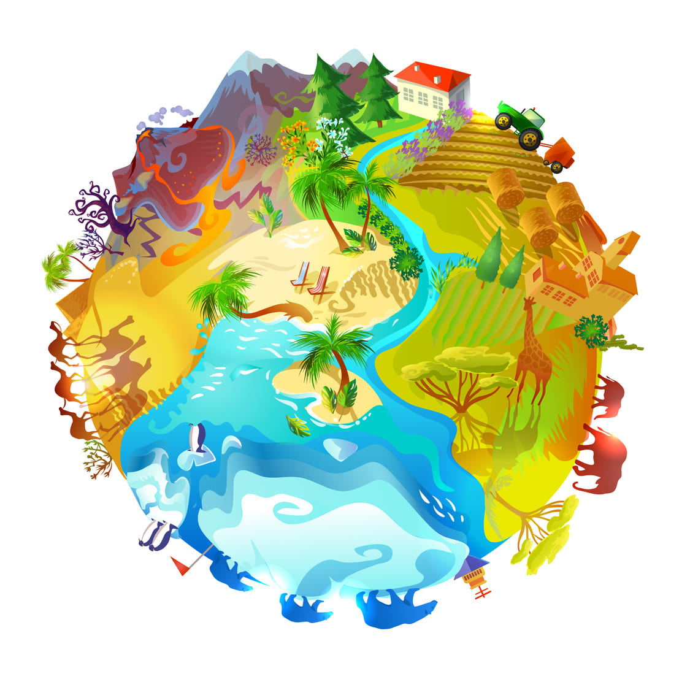

Eles fazem parte de um plano de ação criado pela ONU chamado Agenda 2030. São 169 metas divididas em 17 objetivos, que surgiram da necessidade de explicar as questões socioambientais mais relevantes para o futuro do planeta e da humanidade, a fim de engajar a sociedade na busca por soluções. Sustentabilidade é suprir as necessidades do presente, mas também garantir a disponibilidade de recursos para o futuro. Vai muito além de cuidar do meio ambiente, envolve também educação, cultura, economia, paz e justiça social, diversidade, inclusão, equidade e muito mais.
Um dos principais focos do Objetivo 15 é a proteção dos ecossistemas terrestres, que desempenham um papel fundamental na manutenção da vida no planeta. A preservação de áreas naturais, como florestas, pântanos e montanhas, é essencial para a conservação da biodiversidade, a regulação do clima e a provisão de recursos naturais.
A gestão sustentável das florestas é um aspecto crucial do Objetivo 15. As florestas desempenham um papel vital na absorção de dióxido de carbono, na proteção do solo e na manutenção dos recursos hídricos. Promover o uso sustentável das florestas envolve a implementação de práticas de manejo responsável, o combate ao desmatamento ilegal e a promoção da reflorestação.
A desertificação é um fenômeno preocupante que afeta muitas regiões do mundo. O Objetivo 15 visa combater a desertificação por meio da implementação de estratégias de conservação do solo, gestão adequada da água e adoção de práticas agrícolas sustentáveis. O objetivo é reverter o processo de desertificação e promover a recuperação de áreas degradadas.
A perda de biodiversidade é um dos desafios mais urgentes que enfrentamos atualmente. O Objetivo 15 busca deter a perda de biodiversidade por meio da proteção de habitats naturais, do combate ao tráfico de espécies e da promoção da conservação de espécies ameaçadas. Além disso, promove a conscientização e a educação sobre a importância da biodiversidade para a sustentabilidade do planeta.
Nina é antenada, curiosa, aventureira e apaixonada pelo universo da sustentabilidade. Há algum tempo planejava conhecer mais sobre a aplicabilidade dos 17 Objetivos de Desenvolvimento Sustentável, pois acredita que as pessoas precisam saber como participar dessa transformação que tanto se fala. Então, Nina saiu em busca de projetos e pessoas inspiradoras ao redor do Brasil e do mundo! Agora, com a ajuda de seu amigo e desenhista Joca, ela conseguiu colocar essas histórias no papel. ""As Aventuras de Nina"" é uma série de 34 episódios que narram essas descobertas conectadas aos 17 ODS!